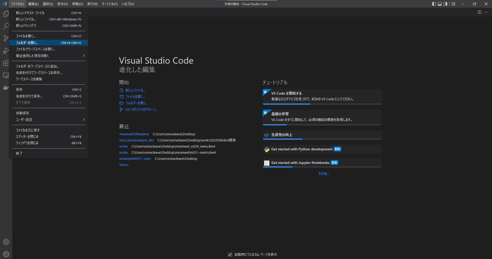
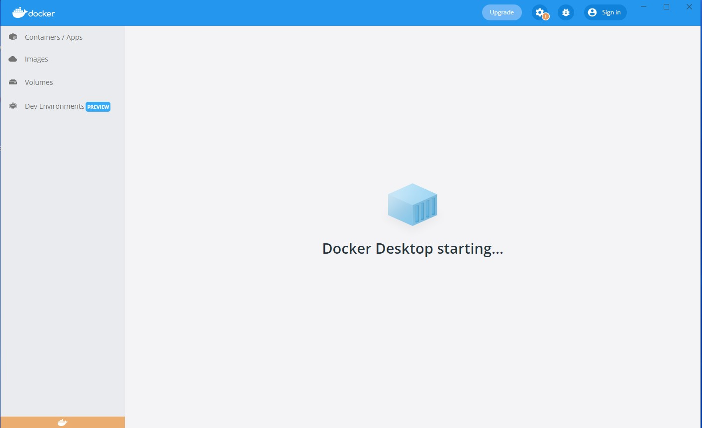
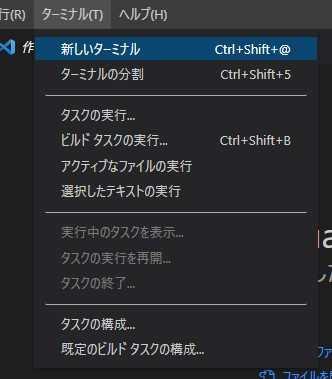

環境構築 その１ Django APIサーバーをDocker環境で準備
はじめに今回のハンズオンの環境構築を行いたいと思います。
まずは、Vueの環境を立てる前にサーバーサイドとして使用する
Djangoフレームワークを用いてAPIサーバーを準備します。

vscodeの拡張機能の確認
vscodeの拡張機能で、「ESLint」「Vetur」が入っているか確認してください。
拡張機能を開く
「ESLint」「Vetur」をインストールされいてるか確認する。まだの場合はインストールする。
ESLint 保存時に自動フォーマットしたり、コードの構文チェックをしてくれる。
Vetur vue.jsでシンタックスハイライトしてくれる。vscodeでvue.jsを扱うならほぼ必須。
インストールした場合は、vscodeを一度閉じて、再起動してください。githubリポジトリにアクセス
以下リンクよりデモアプリのあるGithubリポジトリにアクセスします。
URL:https://github.com/miracleave-ltd/mirameetVol31-Vue.js
ソースコードダウンロード
Codeボタンより、Zipファイルをダウンロードします。
ソースコード展開
ダウンロードしたZipファイルを任意のフォルダに展開してください。
※次の手順を進めるに当たり、展開されたフォルダをVSCodeで開くようお願いします。
ファイル フォルダーを開く

client > ecsiteを選択して開く
- サーバーの起動
一度ローカルでサーバーを立ち上げましょう。
5-1. Docker Desktopの起動確認
docker Desktopが起動できていることを確認します 
5-2. Dockerのbuildと起動の確認
コマンドをVSCodeのターミナル上から実施し、Dockerの起動を行います。
ターミナル > 新しいターミナル

以下コマンドでdocker-compose.ymlがあるフォルダに階層を移動します。
以下コマンドを実行し、コンテナをビルドします。cd ../../
dockerが起動しているか以下のコマンドで確認してみましょう。docker-compose up -d --build
state が Up となっていれば問題ありません。docker-compose ps Name Command State Ports -------------------------------------------------------------------------------------------------- mirameet_vol30_20220314_client_1 docker-entrypoint.sh node Up 0.0.0.0:8080->8080/tcp mirameet_vol30_20220314_server_1 python manage.py runserver ... Up 0.0.0.0:8040->8000/tcp